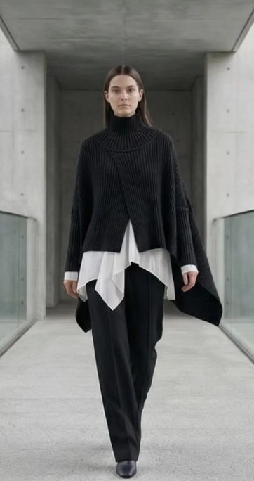
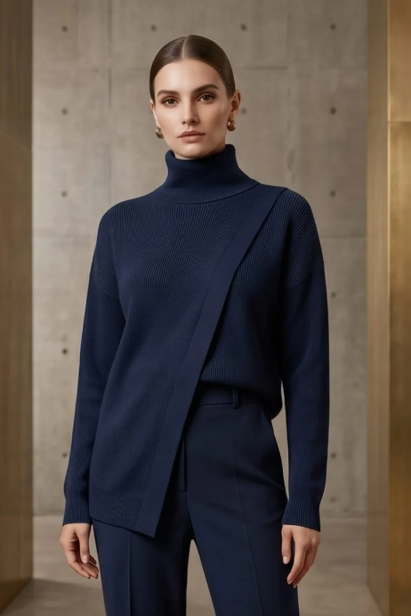
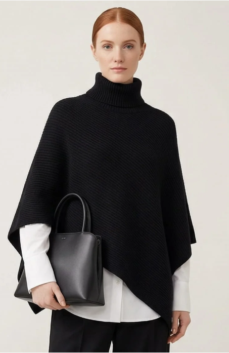

Peças exclusivas feitas para quem não abre mão da sofisticação no dia a dia.
Materiais selecionados e acabamento de alto padrão.
Peças leves e macias, ideais para qualquer estação.
Design moderno que une tradição e tendências.



Dúvidas sobre tamanhos ou entregas? Nosso atendimento é humanizado e rápido.